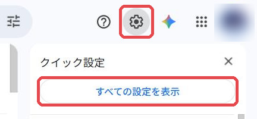
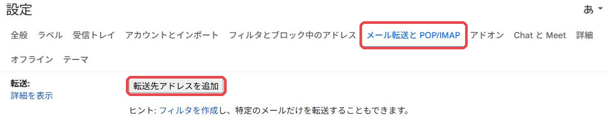
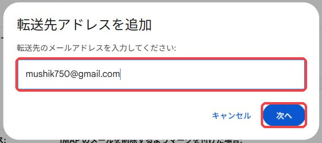
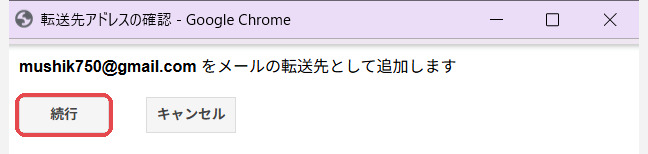
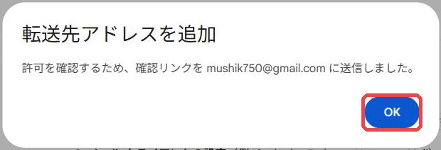
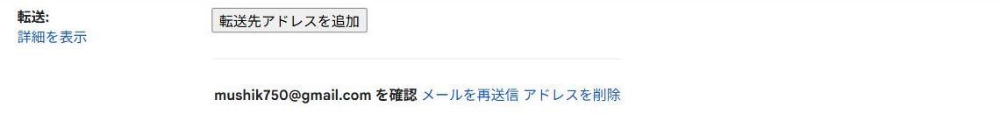
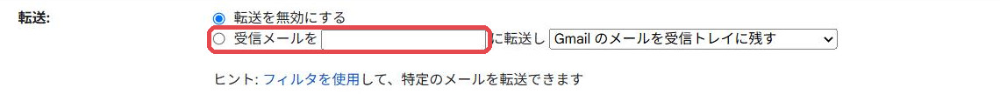
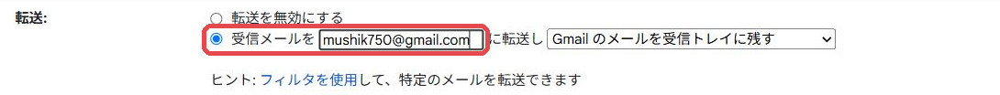
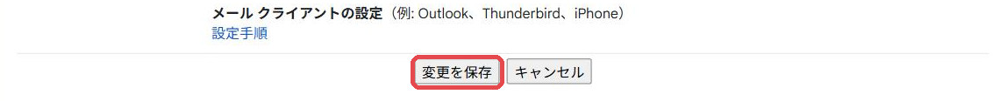
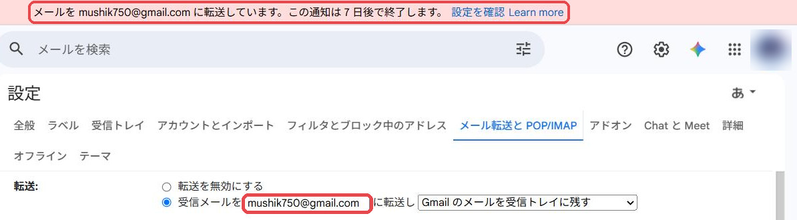

GMAIL の設定 ・ パソコンで 5 分
リンクスメイト（LinksMate）にログインするたびに届く「認証コード」のメールを、弊社の受付用アドレスにも届くようにします。 これにより、ログインのたびにコードをお知らせいただかなくても、弊社で手続きを進められるようになります。
元のメールはこれまでどおりお客様の受信トレイに残ります。転送はいつでもお客様ご自身で止められます（止め方はページ下部）。
いまは、もっと簡単な方法をおすすめしています。リンクスメイトのマイページでボタンを1つ押して「メール認証」をオフにし、ログインIDとパスワードを担当者にお伝えいただく方法です（Gmail の設定は要りません）。
→ 「メール認証」をオフにする手順（スマートフォンで3分）
このページの方法は、上の方法が使えない場合の予備です。
お申し込みを弊社が代わりに進めるため、ログインのたびに届く認証コードを弊社が受け取れる状態にする必要があります。次のどちらかを選んでください。
ご注意（正直にお伝えします）
LinksMate に登録しているアドレスはそのままです。届いた認証コードのメールが、自動で弊社にも届くようにする方法です。手順はこのページの下のとおりです。
mushik750@gmail.com
Gmail を開き、右上の歯車のアイコンを押します。右に出てくるパネルのいちばん上、すべての設定を表示 を押します。

上に並んだタブから メール転送と POP/IMAP を選び、すぐ下の 転送先アドレスを追加 を押します。

出てきた欄に mushik750@gmail.com を入れて 次へ を押します。

ブラウザの別ウィンドウが小さく開きます。「mushik750@gmail.com をメールの転送先として追加します」と出たら 続行 を押します。

元の画面に戻り「確認リンクを mushik750@gmail.com に送信しました」と出るので OK。

この時点では、画面はこう表示されています（まだ承認待ち）。

承認は弊社側で自動で行います。ご連絡は不要です。1分ほど待ってから、キーボードの F5（Mac は ⌘ + R）でページを読み込み直してください。
下のように、転送の欄が2つの選択肢に変わっていれば承認済みです。

mushik750@gmail.com を入れてください。右のプルダウンは Gmail のメールを受信トレイに残す のままで構いません。

ページをいちばん下までスクロールして 変更を保存 を押します。押さないと設定は残りません。

画面のいちばん上に 「メールを mushik750@gmail.com に転送しています」という帯が出ていれば完了です（帯は7日で自然に消えます）。

最後に、担当者へ「転送設定が完了した」旨をご連絡ください。転送が届いているかは弊社で確認します。
承認は弊社側で自動で行っていますが、処理が止まっている可能性があります。10分たっても変わらない場合は担当者までご連絡ください。手順 5 の画面のまま閉じて大丈夫です（あとで F5 すれば続きからできます）。
手順 7 の空欄の打ち間違いです。コピーボタンで写して貼り付け、前後に空白が入っていないか見てからもう一度保存してください。
スマートフォンの Chrome で mail.google.com を開き、右上の「︙」から PC 版サイト にチェックを入れると、同じ画面が出ます（小さいので拡大しながら）。iPhone の Safari なら、アドレス欄の「ぁあ」から デスクトップ用Webサイトを表示。
手順 1〜6 は同じです。手順 7〜9 の代わりに、次の「フィルタ」を作ってください。これならリンクスメイト以外のメールは1通も転送されません。
@linksmate.jp と入れて、右下の フィルタを作成mushik750@gmail.com を選ぶ → もう一度 フィルタを作成一覧に「from:(@linksmate.jp) ／ mushik750@gmail.com に転送する」の行が増えれば完了です。
設定 → メール転送と POP/IMAP で 転送を無効にする を選び、いちばん下の 変更を保存。その瞬間から止まります。フィルタで設定した人は フィルタとブロック中のアドレス でその行を 削除。止めた場合は担当者までお知らせください（以降の手続きを弊社で進められなくなるため）。